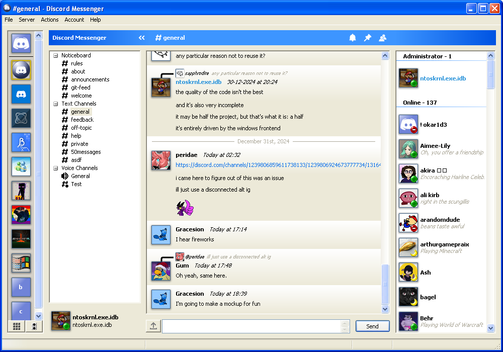
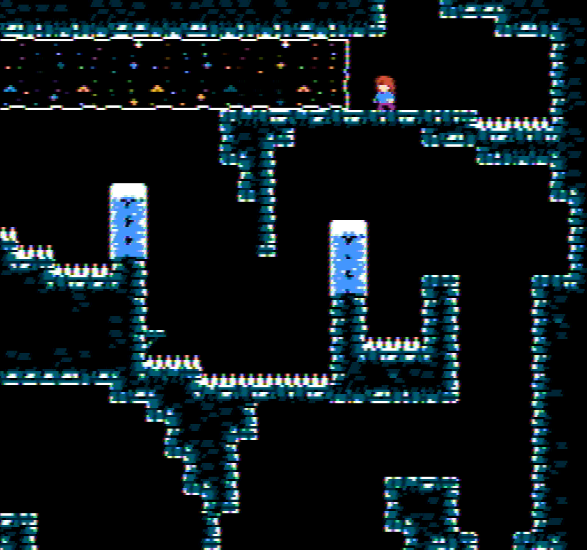

Happy New Year 2025!
This year was incredibly chaotic and eventful. It's changed a lot, not only in the world, but also in my life. I got to know a lot of people both online and in real life.
I graduated high school this year. Now in my first year of university, I'm liking it so far. But I know that it will become more and more stressful as time goes on. For now, it's great!
But here I mainly want to talk about what I achieved online, in the programming realm.
Among other things, here are the projects I worked on the most this year:
Discord Messenger
Discord Messenger is my attempt at creating a Discord client for old Windows versions. The road to supporting versions earlier than Windows XP SP3 was rocky, to say the least. I had to futz around with different MinGW versions, compiling OpenSSL from scratch to disable use of SSE/SSE2 instructions, that kinda thing. But it's come along really well.
I started this project in early 2023, but it was extremely barebones and couldn't even connect to Discord's servers. I put that project on hold in around February of 2023.
Then in late February this year I picked it back up. Eventually, in April I showed the first previews to the Discord server for Unicord (Wam's Discord client for UWP). Finally, in May, I published the source code and continued improving the client.

Boron
Link to the operating system project
Well, I didn't start this one in 2024, but I made quite a lot of progress! Still, nowhere close to having a usable experience. I got demotivated too early, so I started getting sidetracked.
In 2023, Boron had the basics of the kernel core (Ke), and not much more. Last New Year's Eve,
I decided to try to recreate NanoShell's Fireworks application, but with a twist: each particle is
a single thread.
Sadly, I couldn't finish hunting down all the bugs by the turn of the year, but afterwards I had it working nicely. It tests the following:
- load balancing (I dubbed this work stealing, surely this isn't unique though)
- thread scheduling
- out of memory conditions (Yes, I had to handle those to keep the test running!)
Come to think of it, this test found bugs all the way until September of this year! (I fixed that bug in this commit)
Since then, several people have used my test for their own projects, and probably found bugs as well!
Here is a list of ports to other people's OSes:
Celeste NES
The one I'm currently working on!
I started CelesteNES on September 12th, out of boredom. I was demotivated from working on Boron because I felt overwhelmed by the vast amounts of code I'd need to write for the memory manager, and felt I had to take a break.
Currently I've pretty much finished the implementation for Chapter 1. (only need to implement the falling blocks, but everything else I've implemented!) I'm now working on Chapter 2. Hopefully I can get the first demo out by January 25th, that's my goal.
Honestly, it wasn't that difficult to get used to writing 6502 assembly, and it sure is difficult to find bugs, but the technology we have now is amazing. Mesen is such a good emulator, I wouldn't give it up for pretty much anything. The killer feature in my opinion is the step back feature (you can step back through code, for example, if you get thrown in a sea of undocumented opcodes, you can use the step back feature to go back to the previous instruction which threw you there. I'm going to miss this feature going back to the rest of my projects!
Have a screenshot of Chapter 2 to hold you over:

Conclusion
These projects are the latest expositions of my skill in the art of programming. And 2025 will be even better! I don't know what I'll work on next, but we'll see.
Happy new year, everyone! Let's enjoy the rest of the holidays!